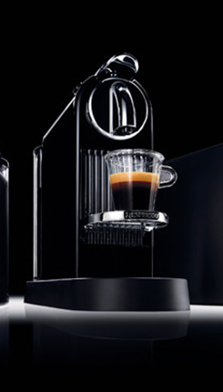

MOBLIE WEB APP PORTFOLIO
NESPRESSO 브랜드에 모바일 웹앱을 만들어 구매효과와 홍보효과를 높이며 사용자의 편리성과 전달력을 중점으로 레이아웃을 짜며 NESPRESSO의 BRAND COLOR를 이용해 제작했습니다.

NESPRESSO 브랜드에 모바일 웹앱을 만들어 구매효과와 홍보효과를 높이며 사용자의 편리성과 전달력을 중점으로 레이아웃을 짜며 NESPRESSO의 BRAND COLOR를 이용해 제작했습니다.
사용자의 가입을 유도하기 위해 이벤트 뱃지를 상단에 배치하며 간편로그인과 회원가입을 배치했습니다. 간편로그인과 회원가입은 그 브랜드의 고유 대표색상을 사용하여 좀 더 사용자가 직관적으로 알 수 있게 사용하였습니다.
사용자에게 정보를 좀 더 직관적으로 전달하기 위해 메뉴를 간략하게 구성하고 핸드폰 터치 시 이중터치가 되지않게 메뉴 레이아웃 간격을 넓게 구성하였습니다. NESPRESSO 브랜드 스타일에 맞게 시각적인 요소로 배경색을블랙으로 사용하였습니다.
HOME 화면상단에는 NESPRESSO 이미지메이킹에 큰 성공으로 이끈 에스프레소머신사진을 배치하며 HOME 화면에서 사용자가 원하는 정보를 바로 갈 수 있게 BRAND STORY와 PRODUCT 배너 이미지에 링크를 걸어 클릭시 해당 페이지로 바로 갈 수 있게 만들었습니다.
사진과 텍스트를 적절하게 사용하여 브랜드 스토리와 주요특징으로 나눠서 배치를 했으며 너무 많은 스크롤이 생기지 않게 주요특징에서는 3가지 특징으로 나눠서 슬릭슬라이더를 사용했습니다. 단조롭지 않게 중요 부분에서는 underline으로 NESPRESSO 브랜드 고유색인 #925a45을 사용했습니다.
NESPRESSO 대표제품인 다크로스트 아메리카노, 마일드로스트 아메리카노, 마일드로스트 스위트 아메리카노, 네스프레소라떼를 슬릭슬라이더로 베치하였으며 너무 많은 스크롤이 생기지않도록 제품 카테고리를 아메리카노와 라떼로 나눠 탭 형태로 배치하여 전 제품을 보여주고 신제품과 베스트 상품에는 뱃지를 달아 사용자에게 정보를 좀 더 직관적으로 전달할 수 있도록 디자인하였습니다.
PRODUCT에서 제품 클릭시 보여지는 상품정보 페이지이며, 제품특징과 제품정보에 대해 자세히 나와있습니다. 제품 캡슐의 로스팅, 바디감, 쓴맛, 산미 등 정확한 정보전달을 위해 NESPRESSO 브랜드 머신 색상계열인 #3f3f3f을 사용했습니다.
조지클루니는 단순히 제품의 인지도를 넘어, 오랜 시간동안 네스프레소 브랜드 이미지를 함께 만들어 왔으며, 조지클루니의 인기가 많아지면서 많은 이들이 네스프레소에서 조지클루니의 모습을 찾기도 합니다. 이를 위해 최신 CF를 보여주며 더 많은 영상을 원하는 사용자를 위해 NESPRESSO CF를 모아둔 YOUTUBE링크를 걸었으며 SNS에서도 사용자가 바로 갈 수 있게 링크를 걸었습니다.